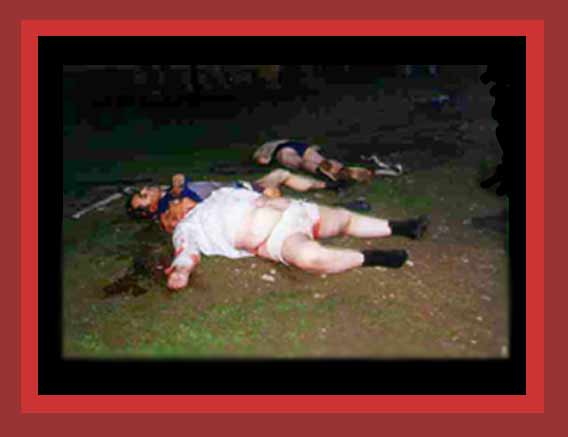

| The Serbs murdered these dead men in Lybeniq, Kosovo. Along with this photo the source reports that Serbian police executed eight people in the village of Lybeniq (90km west of Prishtina), in the Dukagjin region. It is not clear whether this refers to these bodies. Source: "Photographic Evidence of Kosovo Genocide and Conflict" |